A blank black page with dialogue and images cascading throughout, similar to the void fall/devnotes in the first installment,
reset but without the back-and-forth.
The first image is phone photo of character sketches on a notebook page.
Rudy: once upon a time there were two siblings
life & death, bro & sis, crunch bars & granola
classic
oops wrong order
He draws them with the brother, a squarish, bulky figure, on the left, and the sister, a small shape with a heart-shaped head, on the right. From here, Rudy’s renditions illustrate his story.
there.
anyway
when the good king died there were PROBLEMS
ysee the royal law said the oldest offspring was next in line no matter what
but the king was also kind of an asswad
he only taught his son how to actually rule the kingdom

but law is law
so the older sister was crowned king of hearts

Cyrus: Sounds like the previous king was irresponsible.
Rudy: he did his best! ppl missed him
in fact they missed him SO much, they were outraged when his favorite heir got skipped!
and bc the people were SO mad, king of hearts said FUCK YALL and fled the throne!
Cyrus: Goodness.
Rudy: ikr? now THAT is irresponsible
...tho on second thought, maybe it was a rebellion, and she split with an enemy faction??
tbh its been a while
idk why the king left
Cyrus: Does Kade know?
o nah
kade was already out by the time i made this part up
theyre all MY characters now >:)
Cyrus: …Right.
anyway
jack of clubs took over
n hes been searching for the absent king ever since
But he knows how to run the kingdom on his own, no?
/duh/
but its not the same yknow?
gotta have balance and shit
The conversation is abruptly interrupted by a crash."
Cyrus: Did you hear that?
After a significant pause, Rudy: holy shit
{%include nav.html next="5" color="w"%}